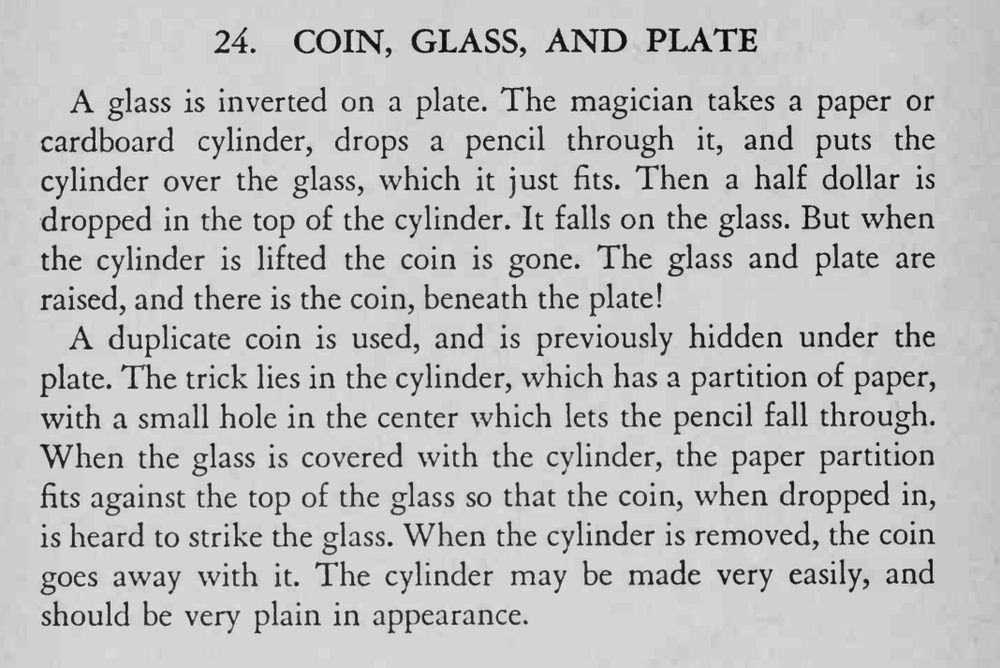

硬币从纸筒顶端投入，落在倒扣的玻璃杯上叮当作响；可抬起纸筒，硬币却不见了。再掀起杯子和盘子，硬币竟出现在盘子底下。
纸筒要做得朴素无奇，纸隔层须正好卡在杯口，投币时才能发出清脆的碰撞声。

A glass is inverted on a plate. The magician takes a paper or cardboard cylinder, drops a pencil through it, and puts the cylinder over the glass, which it just fits. Then a half dollar is dropped in the top of the cylinder. It falls on the glass. But when the cylinder is lifted the coin is gone. The glass and plate are raised, and there is the coin, beneath the plate! A duplicate coin is used, and is previously hidden under the plate. The trick lies in the cylinder, which has a partition of paper, with a small hole in the center which lets the pencil fall through. When the glass is covered with the cylinder, the paper partition fits against the top of the glass so that the coin, when dropped in, is heard to strike the glass. When the cylinder is removed, the coin goes away with The cylinder may be made very easily, and should be very plain in appearance.